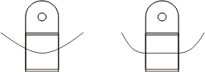
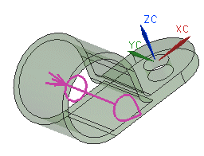
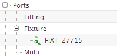

延伸长度定义的是样条段在到达固定件端口时必须保持直线的长度。在这些区域中的值让您布置的(样条)管线在穿过夹子时保持直线。
在左侧的夹子俯视图中，未定义延伸长度；在右侧的视图中，延伸直线段的值等于部件宽度。

您正在使用的夹子是一个参数化模型，并且可能在大小上会有变化。因此有一个名称为 Width=Diameter 的表达式用来定义夹子的宽度。
对于这个夹子，样条仅在穿过部件时保持直线，因此您将把各个端口的延伸长度定义为部件宽度的一半。
在延伸输入框中，键入 Width/2 (使用大写字母 W)。
在向后延伸输入框中，键入相同的值。
点击两次确定。

注意到端口符号的末端有一个锥形，在另一端有一个羽毛符号。这将把这个端口区别为固定件端口。端口符号轴上的圆表示它的原点位于关联直线的中点处。
同时也注意到，这个固定件端口(及其关联编号)现在显示在审核部件对话框中固定件节点的下方。

您也可以在型材偏置点(Stock offset Point，SOP)处放置端口来审核部件。